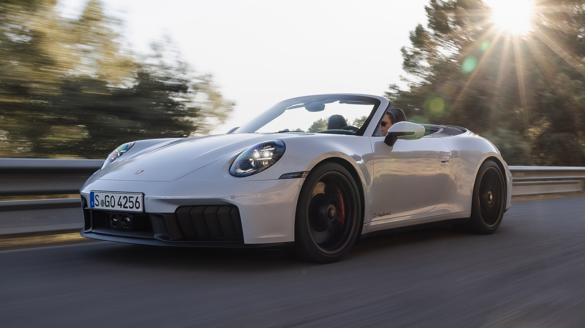
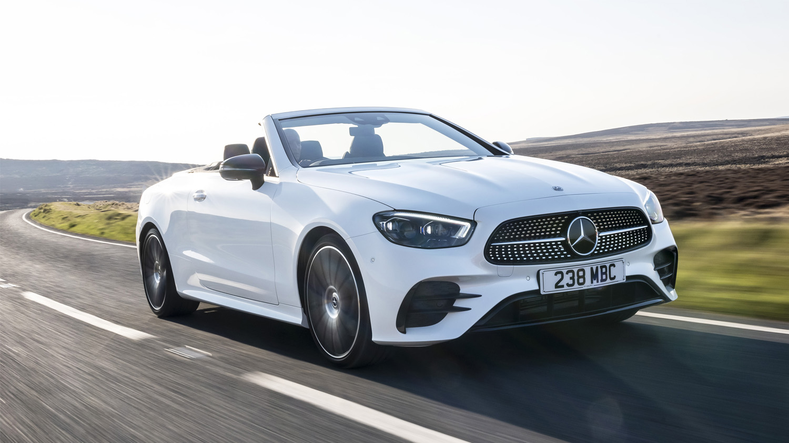
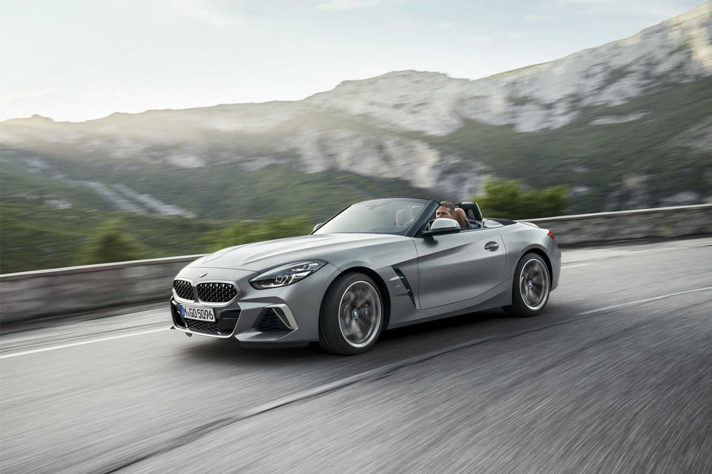
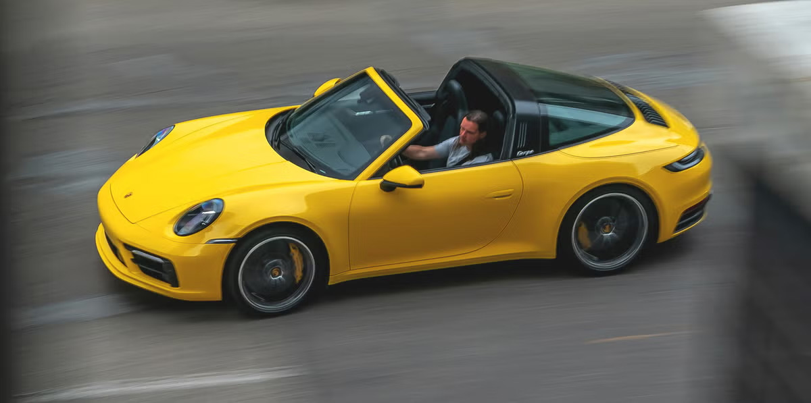
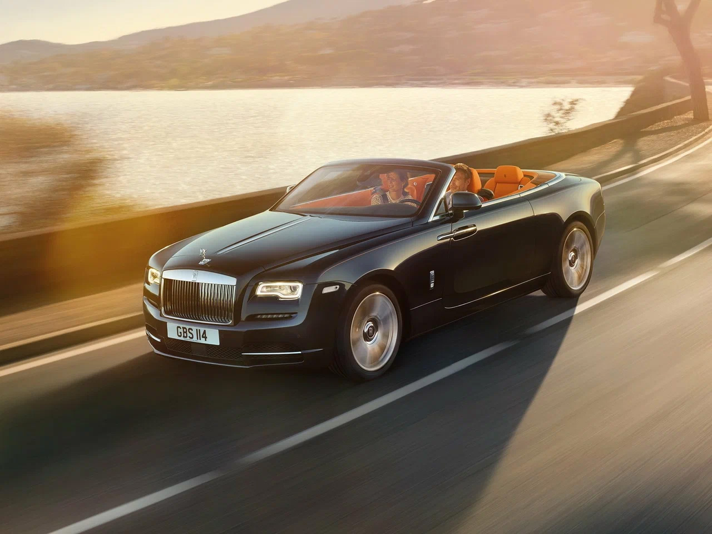

Кузов КАБИРОЛЕТ

Кабриолет (Convertible, Cabriolet, Spyder, Roadster, Drophead Coupe) – это легковой автомобиль с мягкой (тканевой) или жёсткой (металлической) складывающейся крышей, позволяющей ездить как с открытым, так и с закрытым верхом.
Основные характеристики:
- Складная крыша – бывает мягкая (Soft Top) и жёсткая (Hard Top).
- Открытый верх – удовольствие от вождения, особенно в тёплую погоду.
- Чаще всего двухдверный кузов, но есть редкие четырёхдверные кабриолеты (например, Rolls-Royce Phantom Drophead Coupe).
- Жёсткость кузова – усиленные пороги и каркас для компенсации отсутствия крыши.
- Специальные системы безопасности – например, выдвижные дуги при перевороте.
Классификация:
- Классический кабриолет (Convertible, Cabrio) - полноценный кабриолет с мягкой или жёсткой крышей (BMW 4-Series Cabrio, Audi A5 Cabrio, Mercedes E-Class Cabrio).
- Родстер (Roadster, Spyder) - компактный, лёгкий спортивный кабриолет с двумя сиденьями (Mazda MX-5 Miata, Porsche 718 Boxster, BMW Z4, Ferrari 296 GTS).
- Тарга (Targa Top) - полукабриолет с жёсткой несущей дугой и съёмными панелями крыши (Porsche 911 Targa, Ferrari 812 GTS).
- Четырёхдверные кабриолеты - очень редкие, чаще всего люксовые (Rolls-Royce Dawn, Maybach 62 Landaulet).

Mercedes E-Class Cabrio

BMW Z4

Porsche 911 Targa

Rolls-Royce Dawn
Преимущества:
- Свобода и стиль – уникальный опыт вождения с открытым верхом.
- Спортивный дизайн – выглядит эффектно и премиально.
- Хорошая аэродинамика – продуманные обтекаемые формы.
Недостатки:
- Меньше жёсткости кузова – хуже управляемость по сравнению с купе.
- Тяжелее – из-за усиленной конструкции для безопасности.
- Плохая шумоизоляция – особенно у версий с мягким верхом.
- Меньше багажник – крыша занимает много места в сложенном виде.
- Не для зимы – в холодном климате менее практичен.
Кабриолет – это стиль и удовольствие от вождения, но с жертвами в практичности. Он идеален для тёплого климата и любителей открытого неба. Самые радикальные версии – это родстеры и спайдеры, которые ориентированы на максимальные эмоции за рулём.